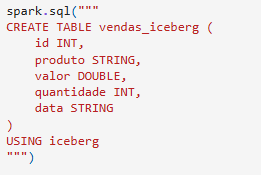
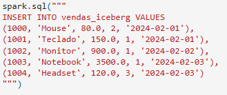
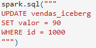
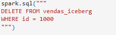
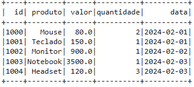

Apache Iceberg
O Apache Iceberg é um formato de tabela aberto, projetado para gerenciar Petabytes de dados com alta performance. Ele foi criado pela Netflix para resolver problemas de lentidão em listagens de arquivos e falta de consistência em grandes Data Lakes.
Além disso, o Iceberg oferece suporte a transações ACID, versionamento de dados e evolução de schema, permitindo alterações na estrutura das tabelas sem comprometer os dados existentes. Ele também melhora a performance de consultas ao evitar a necessidade de varrer todos os arquivos, utilizando metadados otimizados para acessar apenas os dados necessários.
Outro diferencial do Iceberg é sua independência de engine, podendo ser utilizado com diferentes ferramentas como Apache Spark, Flink e Trino. Isso o torna uma solução flexível e interoperável, ideal para arquiteturas modernas de dados onde múltiplos motores de processamento precisam acessar as mesmas tabelas com consistência e eficiência.
Estrutura
Aqui, é a tabela de criação iceberg, onde está mostrando todos seus atributos e tipos.

Por fim, abaixo estará exemplos das manipulações que podem ser feitas.



Logo na 1° imagem, é inserido alguns dados: o Id, o nome do produto, o seu valor, a quantidade dele e por fim, a data da sua venda.
Já na 2° imagem, podemos ver um Update, onde o produto que possui o Id "1000" passa a custar R$ 90.
Por fim, na 3° imagem, todos os produtos com Id "1000" serão deletados da tabela.
Logo abaixo, podemos observar um exemplo de como é o resultado final após as modificações.
